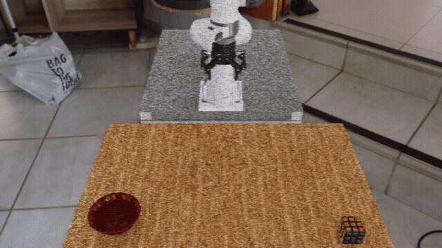
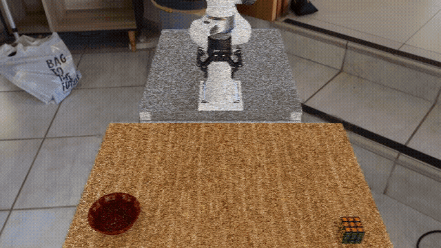

First Arena Environment#
Our first environment, pick_and_place_maple_table, is a table-top pick-and-place environment
where a robot picks up an object and places it into a destination container.

The pick_and_place_maple_table environment: a DROID robot with a Rubik’s cube and bowl on a
maple table.#
Arena builds an environment from three parts that can be changed independently:
Scene — the world around the robot. This includes the room, table, objects, and lighting.
Embodiment — the robot. This defines its cameras, observations, and controls.
Task — the job to complete. Here, the robot must pick up the selected object and place it in the selected destination.
For this environment, the three parts are:
Part |
What this example uses |
|---|---|
Scene |
Maple table, Rubik’s cube, bowl, and lighting |
Embodiment |
DROID with joint-position control |
Task |
Pick up the cube and place it in the bowl |
Keeping these parts separate makes the environment reusable. We can replace the Rubik’s cube with a mustard bottle, choose a different destination or background, or use another compatible robot without rewriting the task.
The following examples run the same environment definition with different choices. First, we run the reference scene. Then we replace the objects and change the background.
Run the Environment#
The examples use the zero-action policy, which keeps the robot still while you inspect the scene. No model weights are required.
Start or enter the Base Docker container from the repository root:
./docker/run_docker.sh
Run the reference scene#
Run the environment with a Rubik’s cube, bowl, and home-office background:
python isaaclab_arena/evaluation/policy_runner.py \
--viz kit \
--policy_type zero_action \
--num_steps 50 \
pick_and_place_maple_table \
--embodiment droid_rel_joint_pos \
--pick_up_object rubiks_cube_hot3d_robolab \
--destination_location bowl_ycb_robolab \
--hdr home_office_robolab
Swap the objects#
Keep the same environment and task, but replace the pick-up object and destination:
python isaaclab_arena/evaluation/policy_runner.py \
--viz kit \
--policy_type zero_action \
--num_steps 50 \
pick_and_place_maple_table \
--embodiment droid_rel_joint_pos \
--pick_up_object mustard_bottle_hot3d_robolab \
--destination_location wooden_bowl_hot3d_robolab \
--hdr home_office_robolab
{kind=link}

The same environment definition and task with different pick-up and destination objects.#
Change the background#
Keep the original objects, but select a different background panorama and ambient lighting:
python isaaclab_arena/evaluation/policy_runner.py \
--viz kit \
--policy_type zero_action \
--num_steps 50 \
pick_and_place_maple_table \
--embodiment droid_rel_joint_pos \
--pick_up_object rubiks_cube_hot3d_robolab \
--destination_location bowl_ycb_robolab \
--hdr billiard_hall_robolab
{kind=link}

The same environment definition with a different background panorama.#
Note
These commands make explicit choices for each run. Arena variations, introduced on the next page, instead choose values automatically when an environment is built or reset and record every sampled value.
How the Environment Is Assembled#
Under the hood, Arena assembles this environment in seven steps:
Retrieve assets. Arena selects the background, objects, and other scene assets from its registries using the environment configuration. A registry is a catalog of assets that Arena can use.
Describe spatial relationships. The table is marked as an anchor, and the objects are placed on it. Arena turns these relationships into concrete poses when it builds the environment.
Configure lighting. The configuration sets the light intensity and optional HDR background.
Select the embodiment. The chosen embodiment provides the robot, cameras, observations, and controls.
Compose the scene. Arena collects the background, lighting, objects, and their spatial references into a scene. The robot remains separate from the scene.
Define the task. The task describes the objective, success and failure conditions, and evaluation metrics independently of the selected assets.
Assemble the environment. Arena combines the scene, embodiment, and task into an environment that Isaac Lab can run.
For more detail, see Assets, Scenes, Embodiments, Tasks, and Environment Compilation.
Full source: pick_and_place_maple_table_environment.py
# Copyright (c) 2025-2026, The Isaac Lab Arena Project Developers (https://github.com/isaac-sim/IsaacLab-Arena/blob/main/CONTRIBUTORS.md).
# All rights reserved.
#
# SPDX-License-Identifier: Apache-2.0
from __future__ import annotations
import argparse
from dataclasses import dataclass, field
from typing import TYPE_CHECKING
from isaaclab_arena.assets.register import register_environment
from isaaclab_arena.environments.arena_environment_factory import ArenaEnvironmentCfg, ArenaEnvironmentFactory
if TYPE_CHECKING:
from isaaclab_arena.environments.isaaclab_arena_environment import IsaacLabArenaEnvironment
@dataclass
class PickAndPlaceMapleTableEnvironmentCfg(ArenaEnvironmentCfg):
"""Configure the Maple-table pick-and-place environment."""
embodiment: str = "droid_abs_joint_pos"
hdr: str | None = None
light_intensity: float = 500.0
pick_up_object: str = "rubiks_cube_hot3d_robolab"
destination_location: str = "bowl_ycb_robolab"
additional_table_objects: list[str] = field(default_factory=list)
@register_environment
class PickAndPlaceMapleTableEnvironment(ArenaEnvironmentFactory[PickAndPlaceMapleTableEnvironmentCfg]):
"""Registered provider for the Maple-table pick-and-place environment."""
name: str = "pick_and_place_maple_table"
_legacy_argparse_cfg_type = PickAndPlaceMapleTableEnvironmentCfg
def build(self, cfg: PickAndPlaceMapleTableEnvironmentCfg) -> IsaacLabArenaEnvironment:
"""Build the environment from its typed configuration."""
from isaaclab.envs.common import ViewerCfg
from isaaclab_arena.assets.object_base import ObjectType
from isaaclab_arena.assets.object_reference import ObjectReference
from isaaclab_arena.environments.isaaclab_arena_environment import IsaacLabArenaEnvironment
from isaaclab_arena.relations.relations import IsAnchor, On
from isaaclab_arena.scene.scene import Scene
from isaaclab_arena.tasks.pick_and_place_task import PickAndPlaceTask
# Step 1: Retrieve assets from the registry
background = self.asset_registry.get_asset_by_name("maple_table_robolab")()
pick_up_object = self.asset_registry.get_asset_by_name(cfg.pick_up_object)()
destination_location = self.asset_registry.get_asset_by_name(cfg.destination_location)()
# Step 2: Describe spatial relationships
table_reference = ObjectReference(
name="table",
prim_path="{ENV_REGEX_NS}/maple_table_robolab/table",
parent_asset=background,
object_type=ObjectType.RIGID,
)
table_reference.add_relation(IsAnchor())
pick_up_object.add_relation(On(table_reference))
destination_location.add_relation(On(table_reference))
additional_table_objects = [
self.asset_registry.get_asset_by_name(name)() for name in cfg.additional_table_objects
]
for obj in additional_table_objects:
obj.add_relation(On(table_reference))
# Step 3: Configure lighting
light = self.asset_registry.get_asset_by_name("light")()
light.set_intensity(cfg.light_intensity)
if cfg.hdr is not None:
light.add_hdr(self.hdr_registry.get_hdr_by_name(cfg.hdr)())
directional_light = self.asset_registry.get_asset_by_name("directional_light")()
# Step 4: Select the embodiment
embodiment = self.asset_registry.get_asset_by_name(cfg.embodiment)(
enable_cameras=cfg.enable_cameras,
)
# Step 5: Compose the scene
scene = Scene(
assets=[
background,
light,
directional_light,
pick_up_object,
destination_location,
table_reference,
*additional_table_objects,
]
)
# Step 6: Define the task
task = PickAndPlaceTask(
pick_up_object=pick_up_object,
destination_location=destination_location,
background_scene=background,
episode_length_s=20.0,
)
# Set viewport camera to match the robolab droid view
def _set_viewer_cfg(env_cfg):
env_cfg.viewer = ViewerCfg(eye=(1.5, 0.0, 1.0), lookat=(0.2, 0.0, 0.0))
return env_cfg
# Step 7: Assemble the environment
isaaclab_arena_environment = IsaacLabArenaEnvironment(
name=self.name,
embodiment=embodiment,
scene=scene,
task=task,
env_cfg_callback=_set_viewer_cfg,
)
return isaaclab_arena_environment
# TODO(cvolk, 2026-07-03): [typed-config-migration] Delete this CLI-only option when teleoperation runners
# receive typed configuration instead of the environment subparser namespace.
@staticmethod
def _add_legacy_cli_only_args(parser: argparse.ArgumentParser) -> None:
# Consumed by Lab teleop_se3_agent.py / record_demos.py via --arena_teleop_device, not by build(cfg).
parser.add_argument("--teleop_device", type=str, default=None)
Next Steps#
Continue to Exploring Environment Variations to let Arena sample controlled changes automatically.
Using IsaacLab-Arena in Your Own Repository#
See Installing IsaacLab-Arena in Your Repository for the recommended pattern of consuming Arena as an unmodified submodule from an external project.